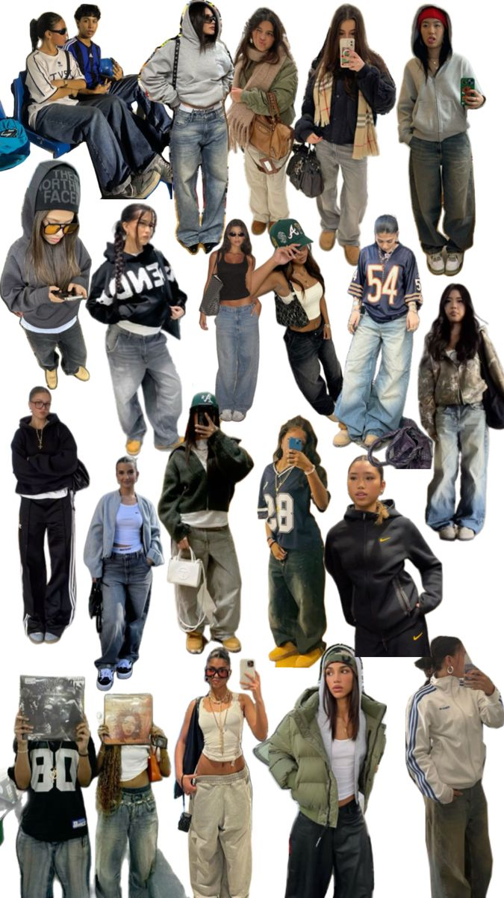
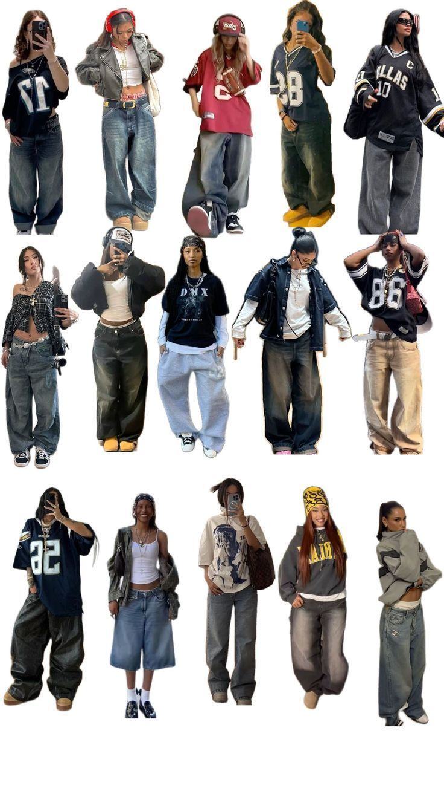
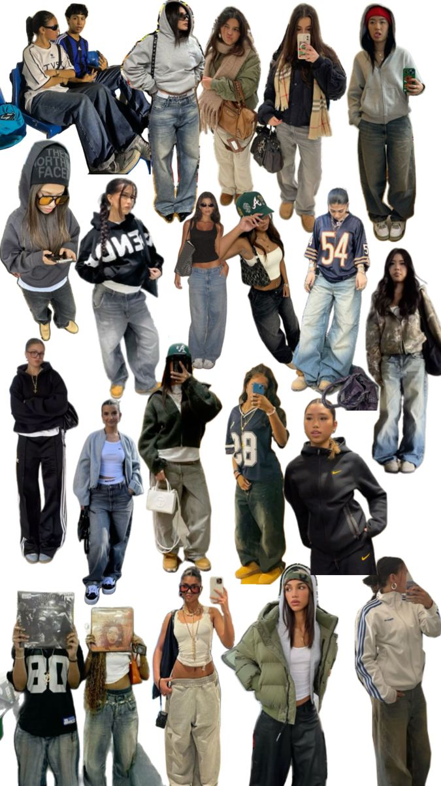
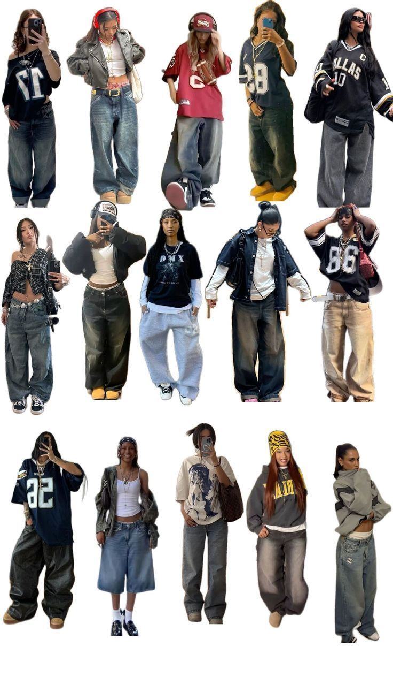
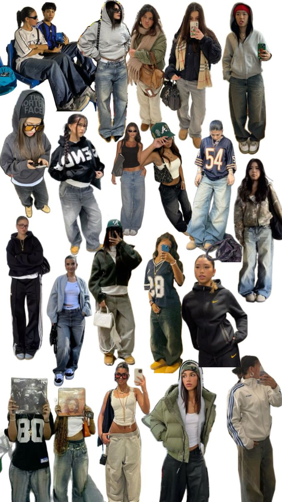
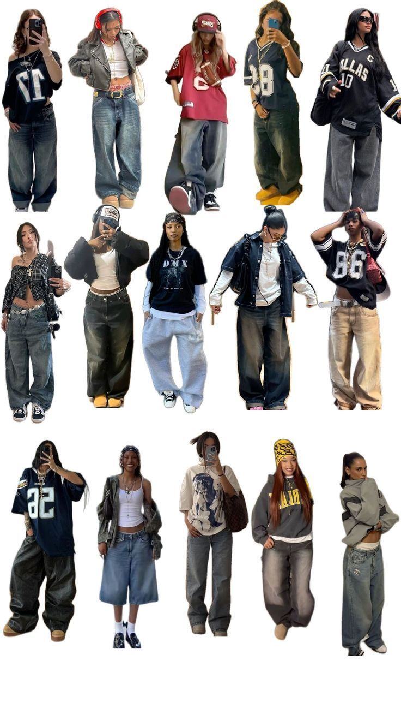

What We Create
 



- Y2K-inspired trend boards
- Streetwear styling concepts
Rose & Rain is a playful, bold, and aesthetic-forward fashion space made for people who love expressive style. Our identity mixes soft pastels with striking streetwear tones blending Y2K nostalgia and modern fashion attitude.

